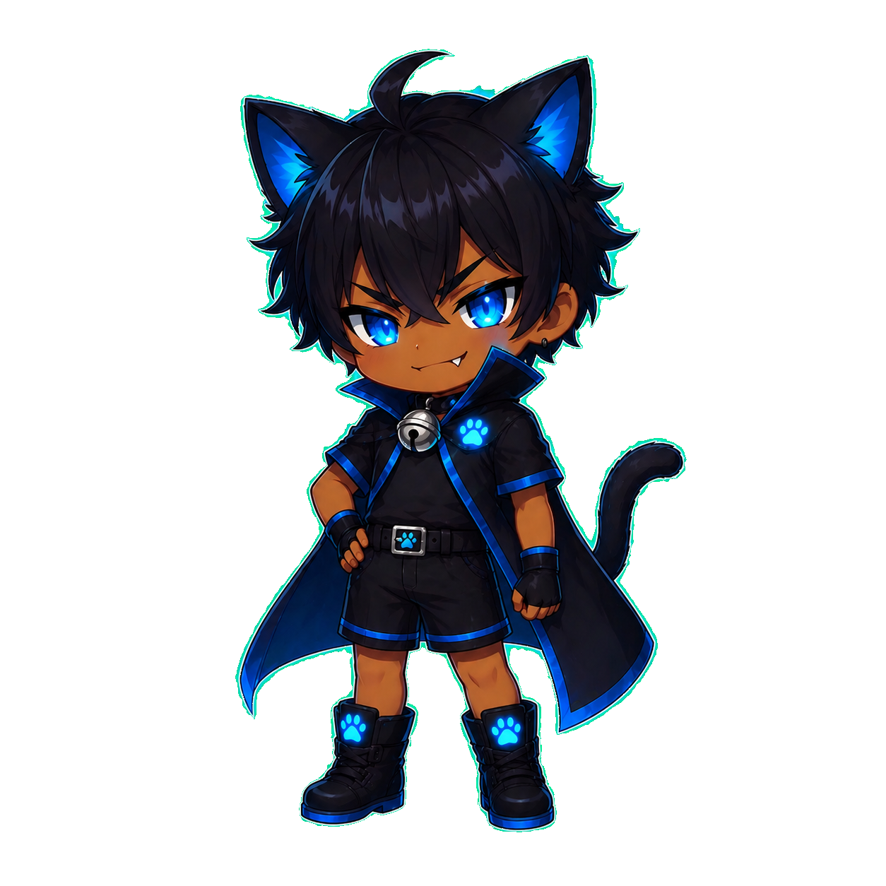
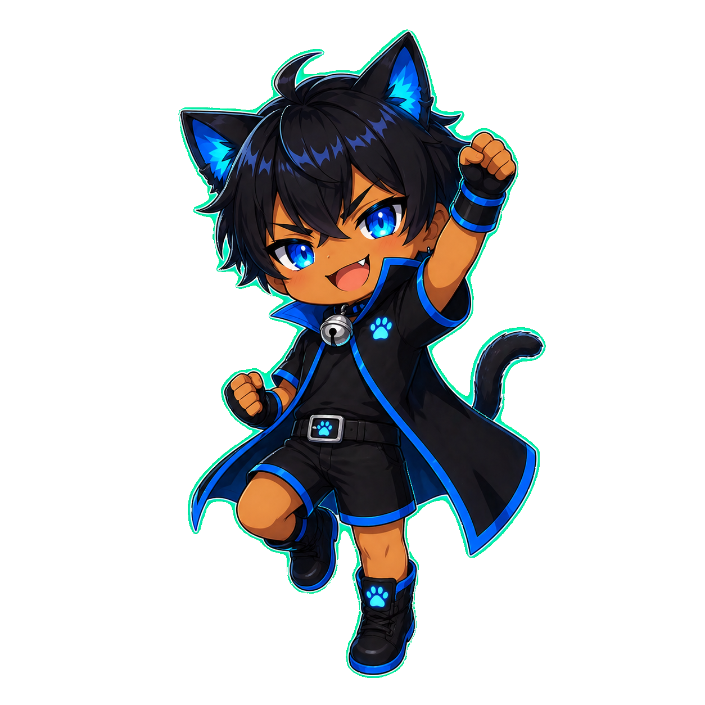
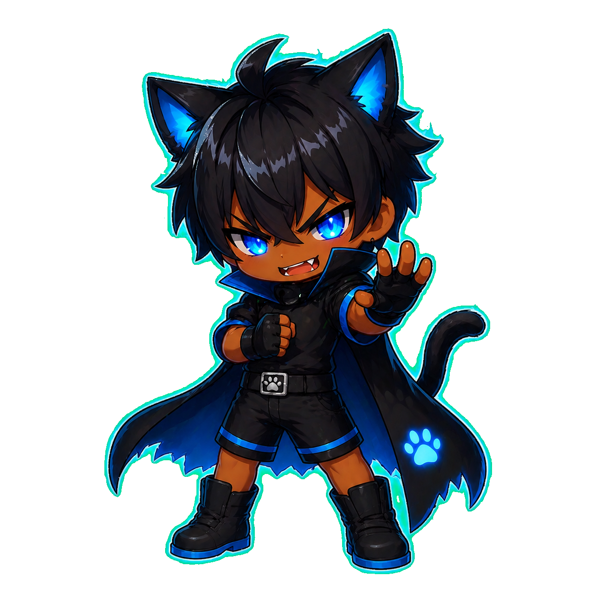

01
Color · 闇 と 一閃
11 tokens
Surfaces · 漆黒の階調
Cyan-Blue · 一閃の青（メインアクセント）
Win · 金光 PERFECT / Lose · 紅蓮
#F5C76A
Gold 400
--gold-400 · PERFECT
02
Glow · 光は世界観の主役
3 sizes × 3 colors
漆黒の上では、色そのものより光の拡散が情緒を作る。
テキスト・線・ドットには必ず外側に滲ませる光を併せて、メリハリを出す。
Gold LG · PERFECT
--glow-gold-lg
03
Type · 明朝で問い、サンセリフで応える
Noto Serif JP / Noto Sans JP
明朝はゲームの「問い」「結果」など世界観を司る。
サンセリフはHUD・数値・操作系。
ms 表示は等幅 (tnum)を必ず使うこと。
72px
--t-display
Serif 600
「合計は？」
合計は？
48px
--t-hero
Serif 600
結果ジャッジ
PERFECT
32px
--t-h1
Serif 600
ゴースト 7番勝負
22px
--t-h2
Sans 700
今日のチャレンジ
15px
--t-body
Sans 400
昨日の自分が、いま光の向こうから挑んでくる。一秒で勝つか、一秒で負けるか。
12px
--t-caption
Sans 500
tnum
142ms · 通算 15勝 8敗 · 5日連続
10px
--t-overline
Sans 700
tracked 0.3em
第 5 戦 / 7 ・ READY
04
Mascot · 黒猫の少年
3 poses
ユーザーの分身であり、過去の自分（ゴースト）でもある。
シーンに合わせて3つのポーズを厳格に使い分ける。

Confident
Hero · Idle · Ready
ホーム画面、READY待機、ゲーム開始前の佇まい。
正面・自信顔。

Energetic
Win · Perfect · Cheer
PERFECT演出、勝利、連勝記録更新。
拳上げ・ガッツ。

Electric
Battle · Ghost · Combat
対戦中、ゴースト本人として登場時、
ゲーム最中のライバル表現。
05
Components · 部品
8 patterns
Buttons
Glass card
Daily streak
5日連続！
次のティアまで あと 2 勝
06
Voice · 言葉
tone & copy
主語：「昨日の自分」
昨日の自分が、
いま光の向こうから挑んでくる。
「ゴースト」は過去の自分であり、
擬人化された対戦相手。怖くも憎くもなく、越えるべき自分として描く。
命令調・短文
昨日の自分を、
超えろ。
見出しは動詞で終わる短文。
＞ 「越えろ」「挑め」「見極めろ」
句読点は明朝に合わせ全角「、。」を使い、改行で詩的なリズムを作る。
· ✦ ·
BRAIN-GHOST · DESIGN SYSTEM v2 · MIDNIGHT CAT · 2025